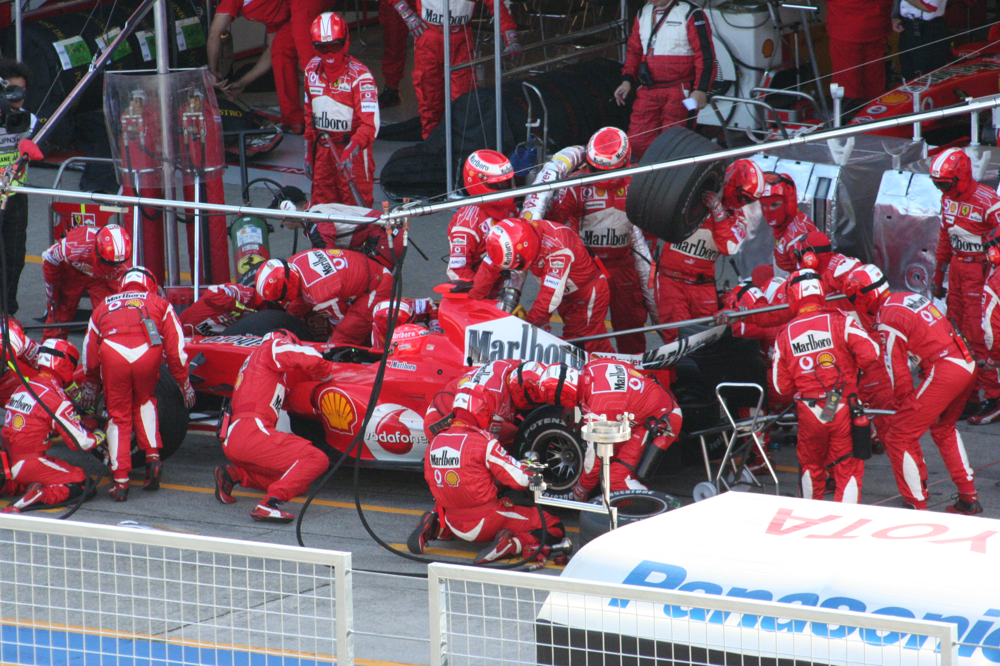

Sobre o
PADDOCK
Um projeto de estudantes que quis contar a Fórmula 1 do jeito que uma boa revista contaria, com fotografia grande, texto claro e movimento.
Paddock é a área de bastidores do autódromo, onde equipes, carros e pilotos se preparam longe da arquibancada.
01 — Objetivo
Explicar a Fórmula 1 sem afastar quem está chegando.
Construir um site multipágina em HTML, CSS e JavaScript que apresente a temporada 2026 da Fórmula 1 de forma visual e fácil de entender.
Para isso, o PADDOCK reúne em um só lugar as 11 equipes do grid, alguns circuitos importantes, o básico de aerodinâmica, pneus e motor, e um arquivo com capacetes, carros e momentos da história.
Como projeto de Front-End, ele também serve para praticar, HTML semântico, CSS responsivo e JavaScript.
02 — Justificativa
Um esporte que ficou mais difícil de acompanhar.
A Fórmula 1 de 2026 começa uma nova era técnica, carros menores e mais leves, asas móveis no lugar do DRS e uma unidade de potência com muito mais energia elétrica. Para quem está chegando, são muitos termos novos.
Ao mesmo tempo, o grid cresceu para onze equipes, com a estreia da Cadillac e a entrada da Audi, faltam páginas em português que juntem tudo isso com boas imagens e explicações curtas.
O PADDOCK tenta ocupar esse espaço e, ao mesmo tempo, mostra como uma ideia visual ambiciosa pode ser construída com ferramentas básicas da web.
03 — Público-alvo
Para quem é o PADDOCK.
- A
Quem está começando
Pessoas que assistiram a uma corrida ou duas e querem entender o que está acontecendo.
- B
Fãs do esporte
Quem já acompanha, mas quer ver as equipes de 2026 e as mudanças técnicas em um lugar só.


Quem fez.
Disciplina: Front-End · Instituição: Universidade Cruzeiro Do Sul SM · Professor(a): Eliane Maria Da Silva Ribeiro